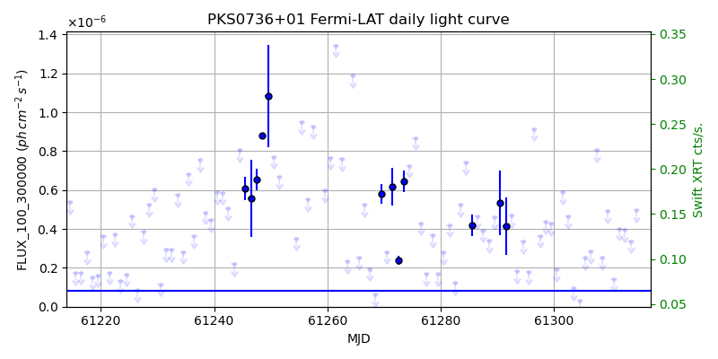
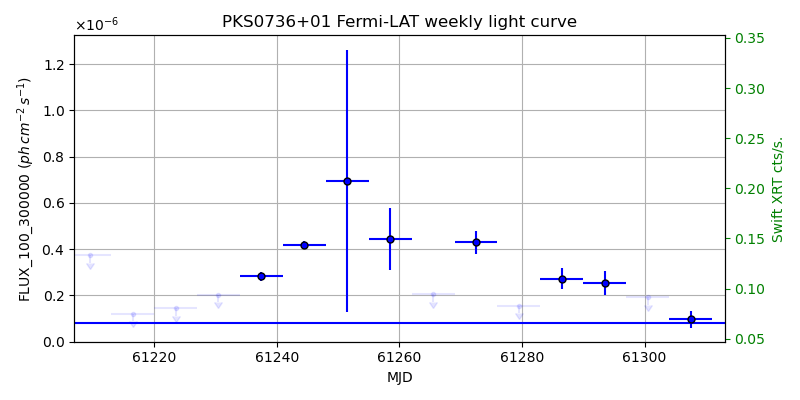
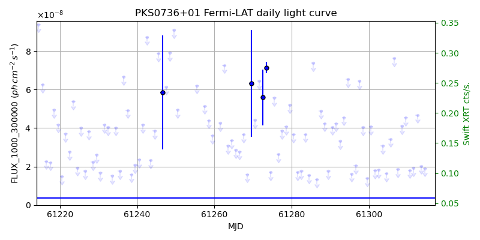
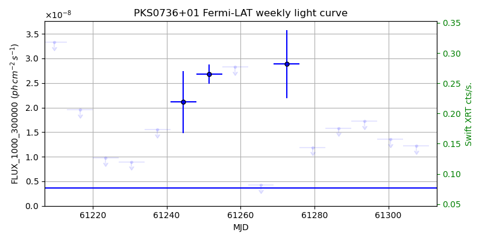

LAT Lightcurve site: https://fermi.gsfc.nasa.gov/ssc/data/access/lat/msl_lc/source/PKS_0736p01
Swift site: https://www.swift.psu.edu/monitoring/source.php?source=PKS0736+01
NED: Query
Time of last update of this page: UT: 2026-10-02 15:19 (MJD: 61315.638)
| Property | Value |
|---|---|
| R.A. | 7:39:18.00 |
| Dec. | 1:37:04.8 |
| z | 0.189 |
| 3FGL SpectrumType | LogParabola |
| 3FGL PL Index | |
| 3FGL Flux_100_300000 | 8.16e-08 1 / (s cm2) |
| 3FGL Flux_1000_300000 | 3.68e-09 1 / (s cm2) |
| 3FGL Flux >200 GeV | 1.72e-13 1 / (s cm2) |
| 3FGL Extrap. Crab >200 GeV | 0.00 |
| 3FGL Flux After EBL Absorption >200GeV | 1.06e-13 1 / (s cm2) |
| 3FGL EBL Crab Fraction >200GeV | 0.00 |

| MJD | dMJD | Flux | dFlux | Frac3FGL | FracCrab>200GeV | EBLFracCrab>200GeV |
|---|---|---|---|---|---|---|
| 61310.50 | 0.50 | 1.42e-07 | 0.00e+00 | 0.00 | 0.00 | 0.00 |
| 61311.50 | 0.50 | 4.01e-07 | 0.00e+00 | 0.00 | 0.00 | 0.00 |
| 61312.50 | 0.50 | 3.95e-07 | 0.00e+00 | 0.00 | 0.00 | 0.00 |
| 61313.50 | 0.50 | 3.37e-07 | 0.00e+00 | 0.00 | 0.00 | 0.00 |
| 61314.50 | 0.50 | 4.96e-07 | 0.00e+00 | 0.00 | 0.00 | 0.00 |

| MJD | dMJD | Flux | dFlux | Frac3FGL | FracCrab>200GeV | EBLFracCrab>200GeV |
|---|---|---|---|---|---|---|
| 61279.50 | 3.50 | 1.56e-07 | 0.00e+00 | 0.00 | 0.00 | 0.00 |
| 61286.50 | 3.50 | 2.72e-07 | 4.66e-08 | 3.34 | 0.00 | 0.00 |
| 61293.50 | 3.50 | 2.53e-07 | 5.30e-08 | 3.10 | 0.00 | 0.00 |
| 61300.50 | 3.50 | 1.94e-07 | 0.00e+00 | 0.00 | 0.00 | 0.00 |
| 61307.50 | 3.50 | 9.65e-08 | 3.82e-08 | 1.18 | 0.00 | 0.00 |

| MJD | dMJD | Flux | dFlux | Frac3FGL | FracCrab>200GeV | EBLFracCrab>200GeV |
|---|---|---|---|---|---|---|
| 61310.50 | 0.50 | 1.81e-08 | 0.00e+00 | 0.00 | 0.00 | 0.00 |
| 61311.50 | 0.50 | 1.91e-08 | 0.00e+00 | 0.00 | 0.00 | 0.00 |
| 61312.50 | 0.50 | 4.68e-08 | 0.00e+00 | 0.00 | 0.00 | 0.00 |
| 61313.50 | 0.50 | 2.03e-08 | 0.00e+00 | 0.00 | 0.00 | 0.00 |
| 61314.50 | 0.50 | 1.91e-08 | 0.00e+00 | 0.00 | 0.00 | 0.00 |

| MJD | dMJD | Flux | dFlux | Frac3FGL | FracCrab>200GeV | EBLFracCrab>200GeV |
|---|---|---|---|---|---|---|
| 61279.50 | 3.50 | 1.19e-08 | 0.00e+00 | 0.00 | 0.00 | 0.00 |
| 61286.50 | 3.50 | 1.58e-08 | 0.00e+00 | 0.00 | 0.00 | 0.00 |
| 61293.50 | 3.50 | 1.73e-08 | 0.00e+00 | 0.00 | 0.00 | 0.00 |
| 61300.50 | 3.50 | 1.36e-08 | 0.00e+00 | 0.00 | 0.00 | 0.00 |
| 61307.50 | 3.50 | 1.22e-08 | 0.00e+00 | 0.00 | 0.00 | 0.00 |
--------------------------------------------------------- Using user-supplied coords: 7:39:18.00 1:37:04.8 2000 --------------------------------------------------------- FLWO UT night of: 2026-10-03 Local Sid. @ Midnight: 00:24 Sunset (-15.0) (local, UT): 19:14 02:14 Sunrise (-15.0) (local, UT): 05:12 12:12 Moonrise (local, UT): 22:48 05:48 Moonset (local, UT): Moon phase: 0.53 --------------------------------------------------------- AzTime LSID UT Obj_el Obj_az Mn_el Mn_az Sep. --------------------------------------------------------- 19:14 19:37 02:14 -56.8 358.4 -28.5 20.1 32.1 19:44 20:07 02:44 -56.2 12.0 -26.2 26.7 31.8 20:14 20:37 03:14 -54.1 24.7 -23.2 32.8 31.6 20:44 21:07 03:44 -50.9 35.9 -19.6 38.5 31.3 21:14 21:37 04:14 -46.7 45.4 -15.7 43.6 31.1 21:44 22:07 04:44 -41.9 53.4 -11.3 48.4 30.9 22:14 22:37 05:14 -36.5 60.2 -6.5 52.7 30.7 22:44 23:07 05:44 -30.8 66.1 -0.8 56.7 30.5 23:14 23:37 06:14 -24.8 71.3 3.8 60.4 30.3 23:44 00:07 06:44 -18.7 76.0 9.1 63.9 30.1 00:14 00:38 07:14 -12.4 80.3 14.6 67.1 30.0 00:44 01:08 07:44 -5.9 84.4 20.3 70.2 29.8 01:14 01:38 08:14 0.7 88.4 26.1 73.1 29.7 01:44 02:08 08:44 6.8 92.3 32.1 76.0 29.6 02:14 02:38 09:14 13.1 96.3 38.1 78.8 29.4 02:44 03:08 09:44 19.5 100.6 44.2 81.7 29.3 03:14 03:38 10:14 25.7 105.1 50.3 84.8 29.2 03:44 04:08 10:44 31.8 110.1 56.5 88.1 29.1 04:14 04:38 11:14 37.7 115.8 62.7 91.9 29.0 04:44 05:08 11:44 43.2 122.4 68.9 96.9 28.8 05:12 05:37 12:12 48.2 129.9 74.7 103.8 28.7 --------------------------------------------------------- Dark hours >55 deg.: 0.00